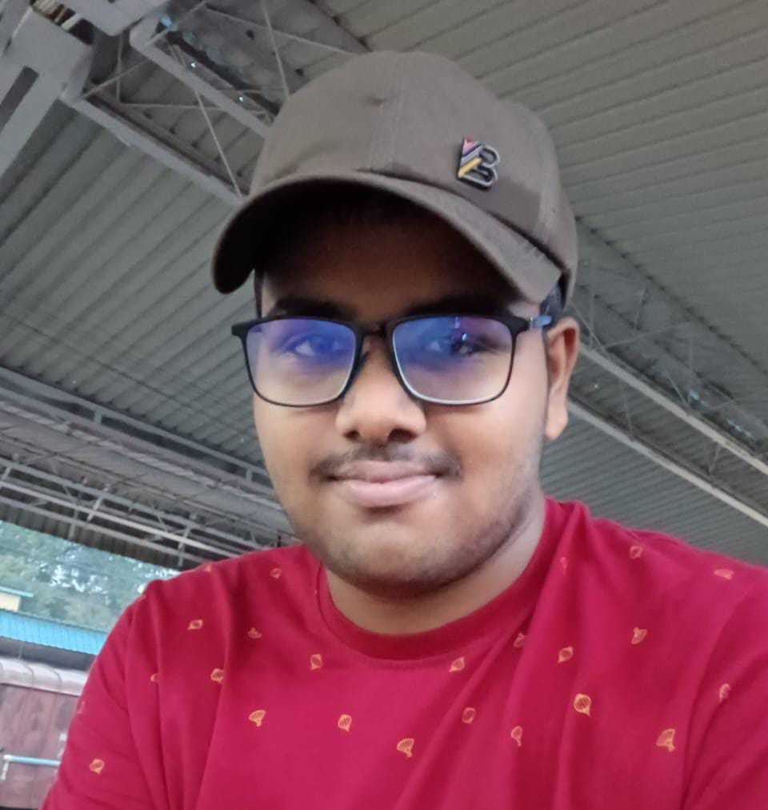

|  | | | | | | | | | | | | | | | | | |
HI, I AM KOUSHIK A COMPUTER SCIENCE STUDENT FROM NIT ROURKELA.
I AM A TECH ENTHUSIAST SKILLED IN C++, C, HTML, CSS, JAVA SCRIPT AND REACT.
I HAVE A STRONG FOUNDATION IN CORE COMPUTER TOPICS LIKE DATA STRUCTURES AND ALGORITHMS,DBMS AND OOPS.
I AM EAGER TO CONTRIBUTE MY SKILLS AND BUILD REAL WORLD APPLICATIONS TOWARDS MY PASSION.
I HAVE MADE PROJECTS ON AI CHATBOT IMPLEMENTATION USING GEMINI API AND A SPORTS SHOP WEBSITE(FULL STACK APPLICATION).
I AM A PART OF VARIOUS TECHNICAL CLUBS LIKE ASTRO NITR, GTA TAKING LEAD AS ONE OF THE WEB DEV TEAM MEMEBRS.
APART FROM TECH THINGS I LOVE SWIMMING, MAKING ARTS, PLAYING CRICKET AND GOING TO GYM ETC.
I ALSO TAKE THE LEAD AS ICS MENTOR GUIDING 10 FIRST YEAR STUDENTS AT NIT ROURKELA. |